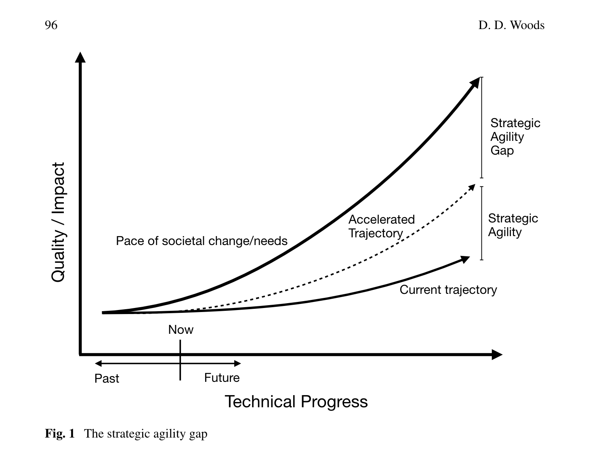

- The Strategic Agility Gap: How Organizations Are Slow and Stale to Adapt in Turbulent Worlds 📄
- by
- Publication date: 2020
- Read: Nov 19, 2023
- Link
Key Takeaways
This paper outlines how past successes drive the creation of bigger and ever more complex systems. And the risk of not being able to adapt fast enough to changing environments and systems. The gap between the adaptation possible and the adaptation required by an organisation is called “The Strategic Agility Gap” and a fundamental requirement to be able to bridge that gap is the ability to react to unplanned failure called “SNAFU catching”.
Detailed discussion
The paper approaches the topic of how organisations deal with the challenge of keeping up with an ever accelerating pace of change in environments and systems that get more and more complex. While the focus here is mostly threats and challenges in the term of surprising failures. It’s also mentioned that slow adaptability also has implications for the ability to seize opportunities. Organisations of course aren’t generally not adapting at all. They are always navigating within their range of agility to adapt to new situations. However the problem arises when this “strategic agility” as it is called in the paper isn’t enough to account for the surrounding changes (e.g. systems and environment) and provide adaptability for new challenges. The difference between the existing level of agility and the required agility to match the surrounding pace of change is what is called “the Strategic Agility Gap”:
“It is a mismatch in velocities of change and velocities of adaptation (Fig. 1)” (Woods, 2020, p. 96)
This is also outlined nicely in this diagram in the paper:

In order to illustrate this gap the paper discusses two cases: The 2012 Knight Capital Collapse during which an organisation wasn’t prepared to adapt to their changed environment and an incident related to “runaway” automation. And the case of large transport firms coping with the impacts and fallout of Hurricane Sandy in the same year.
In the case of the Knight Capital collapse a list of 5 risks are outlined that contributed to the organization’s inability to deal with the incident:
“First, small problems can interact and cascade quickly and surprisingly given the tangle of dependencies across layers inside and outside the organization. Second, as effects cascade and uncertainties grow, multiple roles struggle to understand anomalies, diagnose underlying drivers, identify compensatory actions. Third, difficulties arise getting authorization from appropriate roles to make non-routine, risky, and resource costly actions, while uncertainty remains. Fourth, all of the above take effort, time, and require coordination across roles. […] Fifth, when critical replanning decisions require serial communication vertically through the levels of the organization, responses are unable to keep pace with events.” (Woods, 2020, p. 98)
And in contrast the transportation firms were “poised to adapt” in the scenario they were dealing with due to constant preparatory work that preceded the incident that put them in a position to be able to quickly react:
“Upper management developed mechanisms for this shift prior to particular challenge events. As hurricane Sandy approached New York, temporary teams were created quickly to provide timely updates (weather impact analysis teams).” (Woods, 2020, p. 98)
“These mechanisms existed because this firm’s business model, environment, clientele, and external events regularly required adaptation as surprises were a normal experience.” (Woods, 2020, p. 98)
And in contrasting the cases, the paper again emphasises the importance of being able to adapt not only within a layer of work but also vertically throughout an organisation to push decision making and coordination onto layers that allow for timely reaction to the current situation:
“In the strategic agility gap, the challenge for organizations is to develop new forms of coordination across functional, spatial, and temporal scales—otherwise organizations will be slow, stale and fragmented as they inevitably confront surprising challenges.” (Woods, 2020, p. 99)
The paper then zooms out to a more high level view on systems and their messiness. Highlighting the fact that all development and operations of systems are limited by the fact that resources are finite. And thus preparatory vehicles like plans and automation can never cover the full extent of complexity of a given system:
“All systems are developed and operate given finite resources and live in a changing environment [5]. As a result, plans, procedures, automation, all agents and roles are inherently limited and unable to completely cover the complexity of activities, events, demands, and change” (Woods, 2020, p. 99)
This is a point that is also expanded upon in Woods’ 2023 paper “Resolving the Command–Adapt Paradox: Guided Adaptability to Cope with Complexity“) in greater detail to highlight the limitations of plans and automation.
As an essential capability in dealing with this predicament of having to quickly react to an always changing world that is only predictable in very narrow terms, Woods notes what him and Cook termed “SNFU” catching: The ability of people to adapt outside of standard plans:
“SNAFU catching, however technologically facilitated, is a fundamentally human capability essential for organizational viability […] people in some roles provide the essential adaptive capacity for SNAFU catching, though this may be local, underground, and invisible to distant perspectives [12].” (Woods, 2020, p. 99)
And with SNAFU being the normal operation, even though as the paper argues it is often rationalised away as a fringe phenomenon to put pressure on work-to-{plan,role,rule} and with that hindering the effectiveness and visibility of SNAFU catching:
“The compliance pressure undermines the adaptive capacities needed for SNAFU catching (initiative), creates double binds that drive adaptations to make the system work ‘underground,’ and generates role retreat that undermines coordinated activities.” (Woods, 2020, p. 100)
In the conclusion the paper then outlines a path out of the Strategic Agility Gap which is continuous adaptation:
“For organizations to flourish in the gap they need to build and sustain the ability to continuously adapt.” (Woods, 2020, p. 101)
It draws on lessons from Web Operations where outages and near outages are common in a world where systems are constantly changing and due to past success are enabled to grow and change continuously. It is also a field that has and is becoming more and more important as almost every system is becoming a digital system at least in parts. And in this complex world the limitations of planning are becoming more and more apparent with the underlying layer of resilience to not have them fail catastrophically all the time is SNAFU catching:
“Organizational systems succeed despite the basic limits of plans in a complex, interdependent and changing environment because responsible people adapt to make the system work despite its design—SNAFU catching. The ingredients are:” (Woods, 2020, p. 102)
With the mentioned ingredients being:
- anticipation
- contingent synchronisation
- readiness to respond
- proactive learning
With these behaviours and properties often being severely reduced by the pressure to work-to-{plan/rule/role}, compliance, and worst the fear of sanctions when any of these expectations are violated. And in summary:
“Strategic agility gap arises as organizations’ trajectory of improvement cannot match the emergence of new challenges, risks, and opportunities as complexity penalties grow (Fig. 1). To flourish in the gap requires organizations to build and sustain capabilities for SNAFU catching.” (Woods, 2020, p. 103)
Personal Thoughts
This paper was fascinating to me in a couple of ways. But having the visual of “a gap” in the capacity and capabilities of an organisation was to me an extremely useful way of framing the problem. The paper also casually gave me the best and most succinct definition of DevOps I have ever seen in a decade or so of blog posts and talks trying to define it:
“Reciprocity in collaborative work is commitment to mutual assistance.” (Woods, 2020, p. 103)